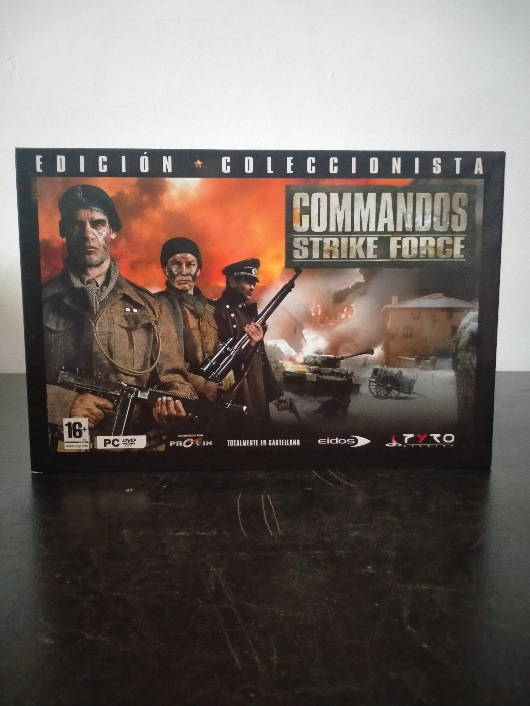

Ficha #000000
Commandos: Strike Force
Commandos: Strike Force es la entrega de 2006 con la que Pyro Studios trasladó su saga de táctica en tiempo real a un shooter en primera persona ambientado en la Segunda Guerra Mundial. La campaña permite alternar entre tres especialistas —boina verde, francotirador y espía— con habilidades diferenciadas, combinando combate directo, infiltración, sabotaje y sigilo en 14 misiones desarrolladas en Francia, Noruega y Rusia, además de multijugador para hasta 16 jugadores en PC. Técnicamente pertenece a la generación DirectX 9.0c y fue concebido para Windows 2000 y Windows XP. Esta edición coleccionista española, distribuida por Proein y completamente en castellano, acompañó el lanzamiento nacional con la banda sonora original de Mateo Pascual, interpretada por la Orquesta Sinfónica de Bratislava y el Coro de la Ciudad de Bratislava, y una memoria USB de 64 MB, convirtiéndola en una de las presentaciones físicas más singulares de la etapa final de la saga desarrollada por Pyro Studios.
- Formato
- Big Box
- Plataforma
- Win2000 WinXP
- Género
- Shooter en primera persona Shooter táctico Sigilo Acción bélica
- Serie
- Todos Big Box
- Desarrollador
- Pyro Studios
- Distribuidor
- Eidos Interactive, Proein
- EAN
- 8431019020116
Contenido de la edición
- Caja exterior Edición Coleccionista
- Videojuego en DVD-ROM dentro de DVD Case
- Banda sonora original en CD con 19 temas
- Memory Stick USB de 64 MB en formato tarjeta
- Bandeja interior de presentación
Preservación
- Protección
- SecuROM
- Formato recomendado
- MDF/MDS
- Jugable en virtualización
- Sí
La edición física en DVD-ROM utiliza SecuROM 7. Para una preservación fiel conviene realizar una imagen con información de posición física del disco mediante herramientas compatibles con DPM, preferiblemente en MDF/MDS, y conservar el soporte original. La ejecución virtual es viable en un entorno Windows 2000/XP adecuadamente configurado, aunque SecuROM puede requerir una unidad virtual compatible y presentar problemas en sistemas Windows modernos.